Chương 2 Các hoạt động kỷ niệm ngày sinh của Bác qua các năm
Chương 3 Các hoạt động dự kiến tổ chức năm nay
Chương 4 Tiếp bước Người - Hướng đến tương lai
CÙNG NHAU NHÌN LẠI SỰ NGHIỆP VĨ ĐẠI CỦA BÁC
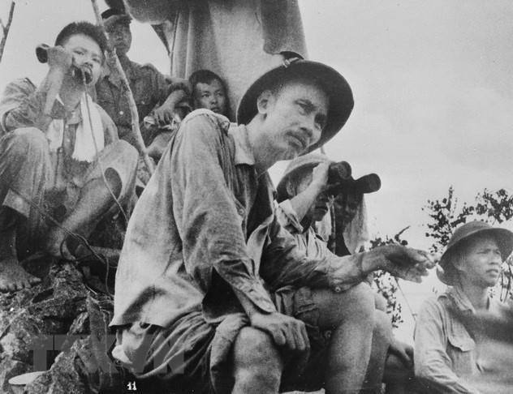
Ngày 19-5-1890, Chủ tịch Hồ Chí Minh sinh tại làng Kim Liên, xã Nam Liên (nay là xã Kim Liên), huyện Nam Đàn, tỉnh Nghệ An, lấy tên Nguyễn Sinh Cung.
💡 Nhấp vào để xem chi tiết
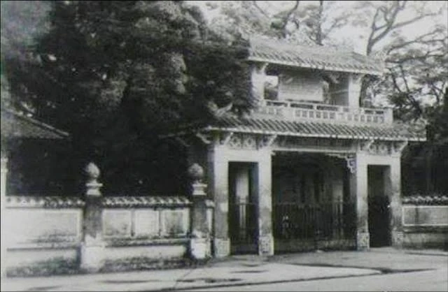
Năm 1907-1908, Người lấy tên là Nguyễn Tất Thành và học tại Quốc học Huế.💡 Nhấp vào để xem chi tiết
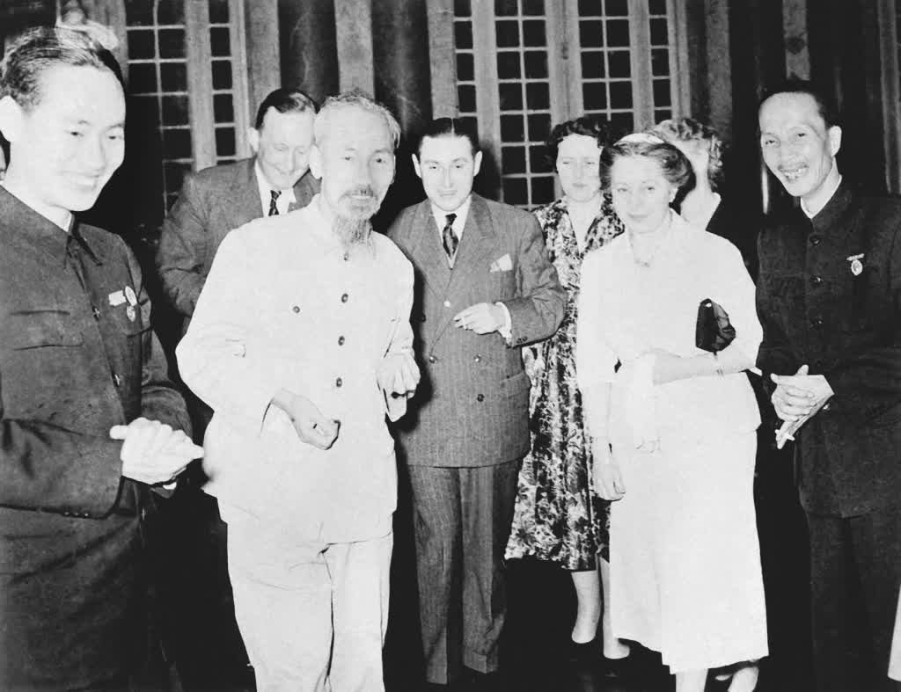
Năm 1910, trên đường vào Sài Gòn, Người dừng chân tại Phan Thiết và làm thầy giáo dạy học tại trường Dục Thanh.💡 Nhấp vào để xem chi tiết
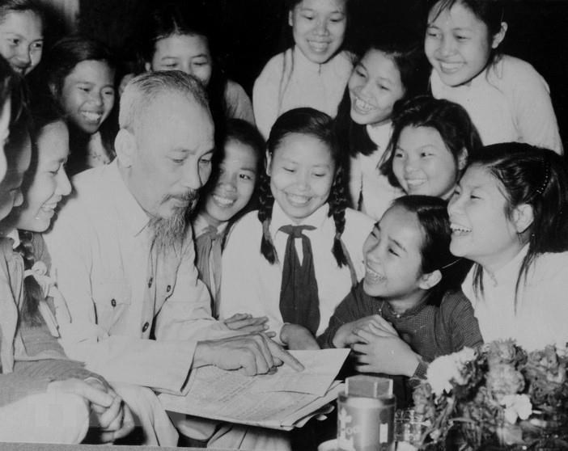
Ngày 3-6-1911, Người lên tàu Đô Đốc Amiral Latouche- Tresville rời bến Nhà Rồng lên đường sang các nước phương Tây tìm đường cứu nước với tên gọi Văn Ba.💡 Nhấp vào để xem chi tiết
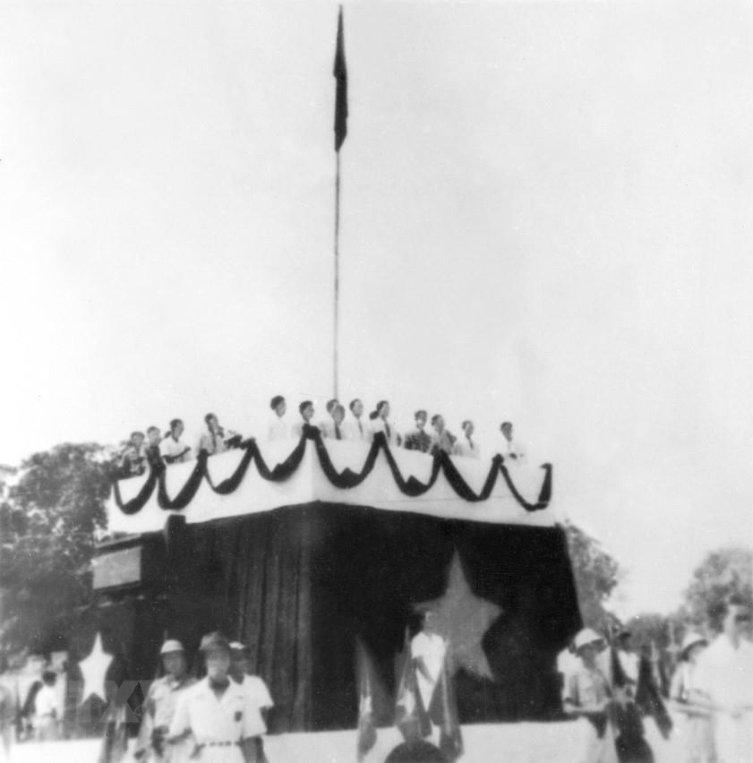
Ngày 18-6-1919, Người lấy tên Nguyễn Ái Quốc và gửi đến Hội nghị hòa bình Versailles “Bản yêu sách của Nhân dân An Nam”.💡 Nhấp vào để xem chi tiếtNăm 1920, Người tham gia thành lập Đảng Cộng sản Pháp tại Đại hội Tua.💡 Nhấp vào để xem chi tiết
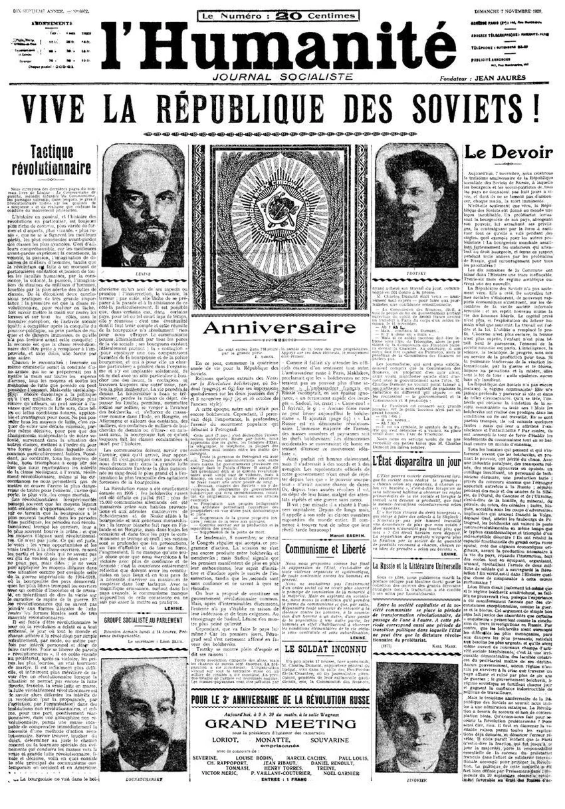
Tháng 7-1920, Người đọc bản sơ thảo lần thứ nhất Luận cương về những vấn đề dân tộc và thuộc địa của V.I.Lê-nin đăng trên báo Nhân dân, tìm ra con đường cứu nước cho dân tộc, con đường cách mạng vô sản.💡 Nhấp vào để xem chi tiết
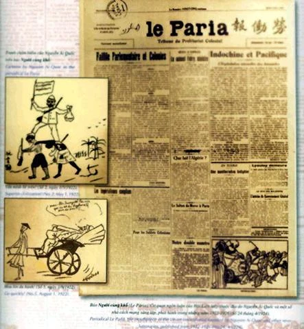
Năm 1921, Người tham gia thành lập Hội Liên hiệp các dân tộc thuộc địa Pháp; xuất bản tờ báo Người cùng khổ ở Pháp (1922).💡 Nhấp vào để xem chi tiết
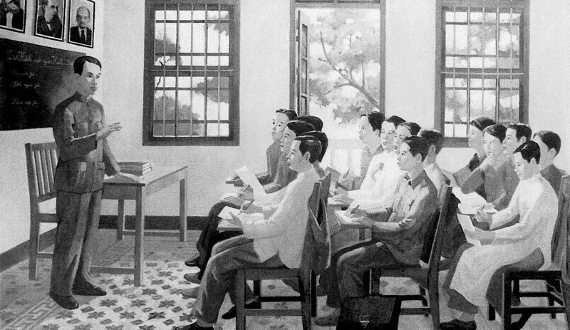
Năm 1923, Người được bầu vào Ban Chấp hành Quốc tế Nông dân. Năm 1924, Người tham dự Đại hội lần thứ V của Quốc tế Cộng sản và được chỉ định là Uỷ viên thường trực Bộ Phương Đông, trực tiếp phụ trách Cục Phương Nam. Sau đó đến Quảng Châu (Trung Quốc) chọn một số thanh niên Việt Nam yêu nước trực tiếp mở lớp đào tạo cán bộ.💡 Nhấp vào để xem chi tiết
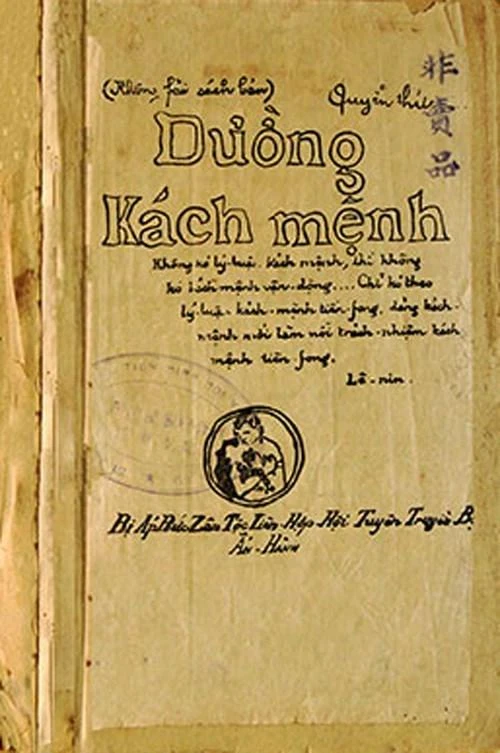
Năm 1927, xuất bản Đường Kách mệnh (1927) là kim chỉ nam cho đường lối cách mạng Việt Nam.💡 Nhấp vào để xem chi tiết
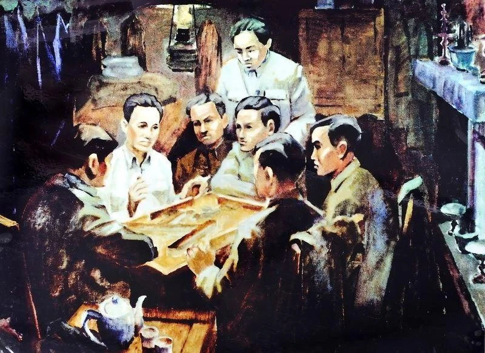
Ngày 3-2-1930, Người chủ tọa Hội nghị thành lập Đảng họp tại Cửu Long (gần Hương Cảng). Hội nghị đã thông qua Chính cương vắn tắt, Sách lược vắn tắt, Điều lệ Đảng do chính Người soạn thảo và thống nhất 3 tổ chức Cộng Sản Việt Nam lấy tên gọi là Đảng Cộng sản Việt Nam.💡 Nhấp vào để xem chi tiết
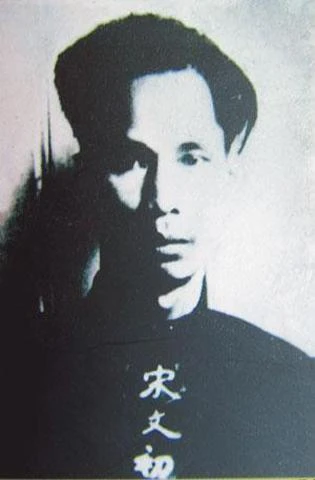
Năm 1931-1932, với tên gọi Tống Văn Sơ, người bị thực dân Anh giam giữ tại Hồng Kông. Năm 1933-1940, dưới sự giúp đỡ của Luật sư Loseby và JenKin, Người được thả tự do và tiếp tục hoạt động cho sự nghiệp giải phóng dân tộc Việt Nam và các dân tộc bị áp bức trên thế giới.💡 Nhấp vào để xem chi tiết
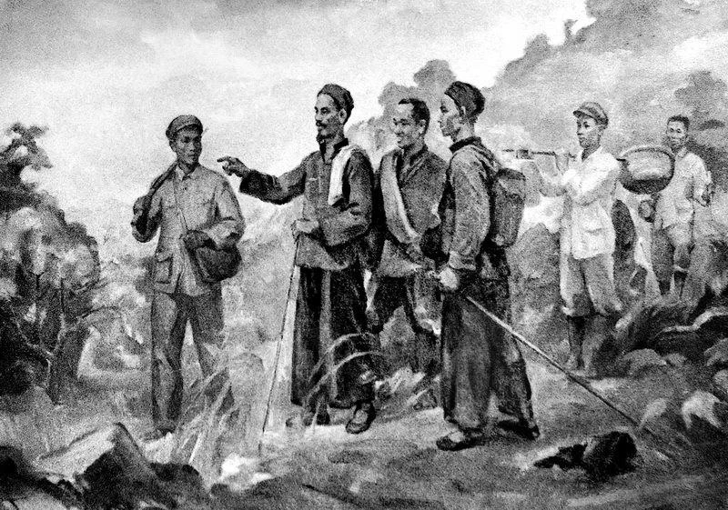
Năm 1941, Người về nước tiếp tục lãnh đạo phong trào cách mạng sau 30 năm bôn ba tìm đường cứu nước.💡 Nhấp vào để xem chi tiết
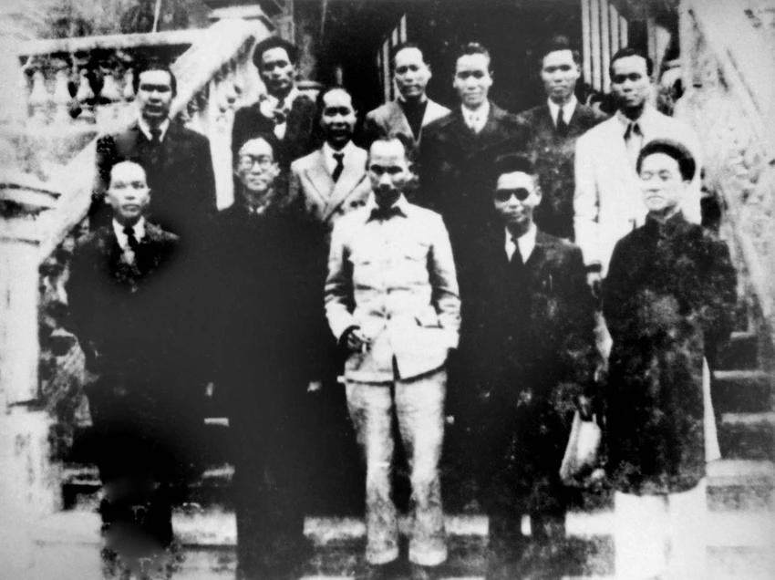
Từ 1943-1945, Người cùng Ban Thường vụ Trung ương Đảng lãnh đạo Nhân dân Việt Nam đấu tranh giành độc lập dân tộc.💡 Nhấp vào để xem chi tiết
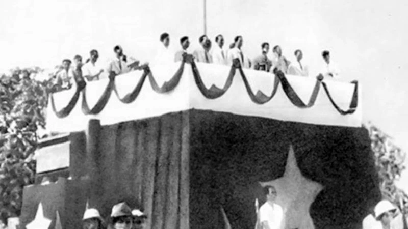
Ngày 2-9-1945, tại Quảng trường Ba Đình, thay mặt Chính phủ lâm thời, Chủ tịch Hồ Chí Minh đọc bản tuyên ngôn độc lập khai sinh nước Việt Nam Dân chủ Cộng hoà.💡 Nhấp vào để xem chi tiết
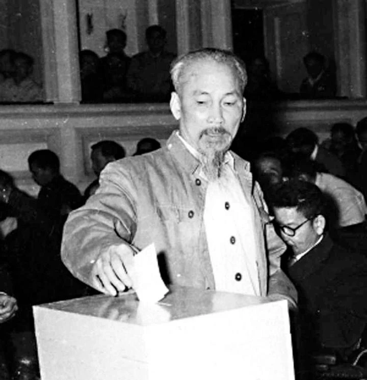
Năm 1946, tại kỳ họp thứ nhất Quốc hội khóa I, Người được bầu làm Chủ tịch nước Việt Nam Dân chủ Cộng hòa.💡 Nhấp vào để xem chi tiết
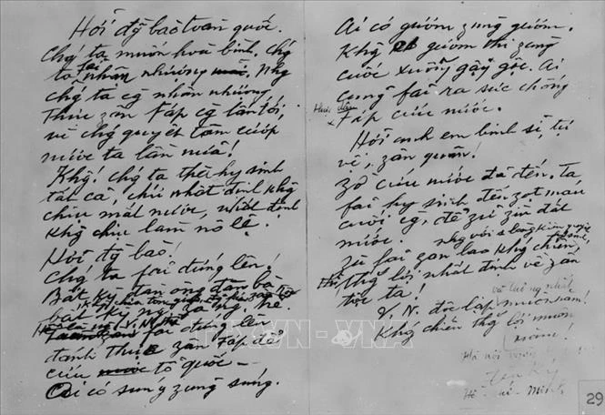
Ngày 19-12-1946, người kêu gọi cả nước kháng chiến chống thực dân Pháp xâm lược, bảo vệ độc lập, tự do của Tổ quốc, bảo vệ và phát triển những thành quả của Cách mạng Tháng Tám.💡 Nhấp vào để xem chi tiết
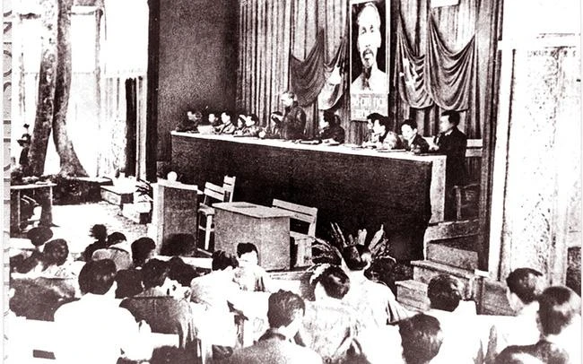
Năm 1951, tại Đại hội lần thứ II của Đảng, Người được bầu làm Chủ tịch Ban Chấp hành Trung ương Đảng.💡 Nhấp vào để xem chi tiết
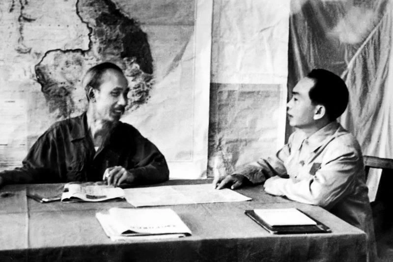
Năm 1953-1954, dưới sự lãnh đạo của Trung ương Đảng, đứng đầu là Chủ tịch Hồ Chí Minh, cuộc kháng chiến của nhân dân Việt Nam chống thực dân Pháp xâm lược đã giành được thắng lợi to lớn, kết thúc bằng chiến thắng vĩ đại Điện Biên Phủ.💡 Nhấp vào để xem chi tiết
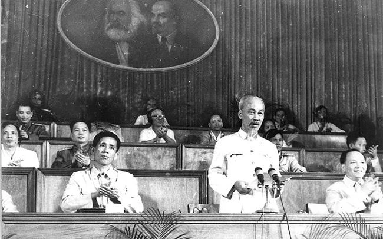
Năm 1960, tại Đại hội lần thứ III của Đảng Người được bầu làm Chủ tịch Ban Chấp hành Trung ương Đảng Lao động Việt Nam.💡 Nhấp vào để xem chi tiết
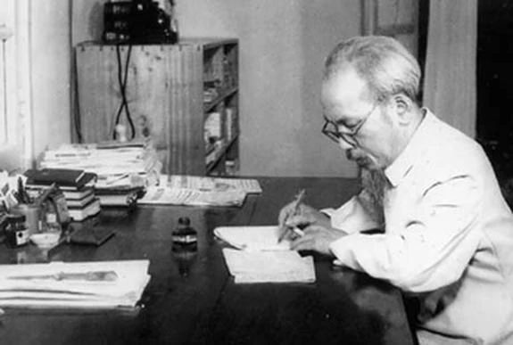
Năm 1965, Chủ tịch Hồ Chí Minh bắt đầu viết di chúc.💡 Nhấp vào để xem chi tiết
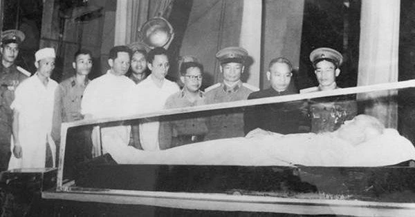
Ngày 2-9-1969, Chủ tịch Hồ Chí Minh qua đời trong sự tiếc nuối của dân tộc Việt Nam và Nhân dân thế giới.💡 Nhấp vào để xem chi tiết
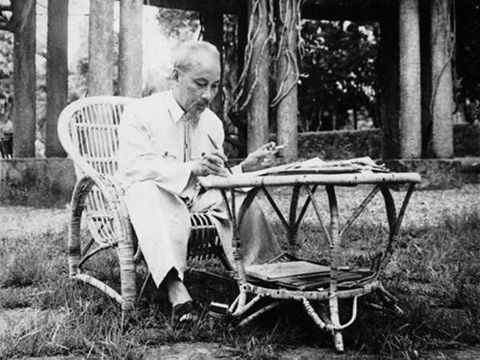
Năm 1990, Chủ tịch Hồ Chí Minh được UNESCO phong tặng danh hiệu “Anh hùng giải phóng dân tộc, Danh nhân văn hoá thế giới”.💡 Nhấp vào để xem chi tiết